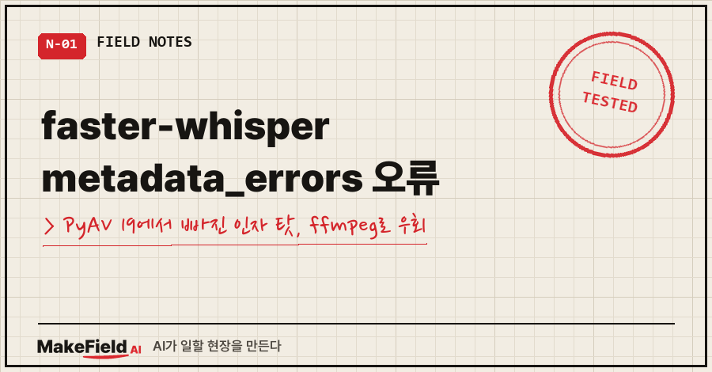
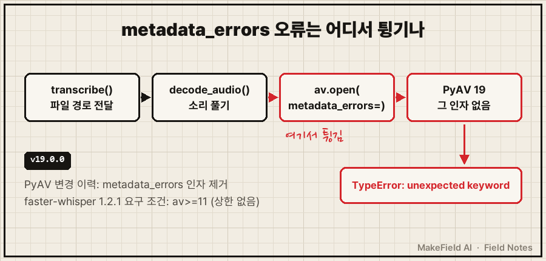
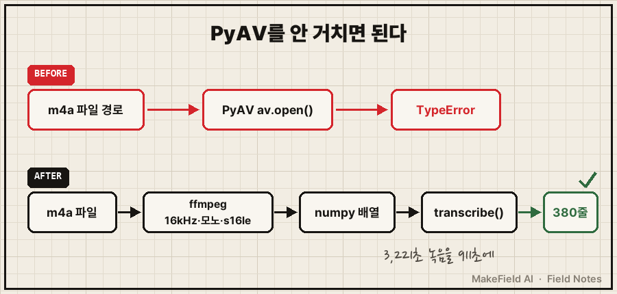
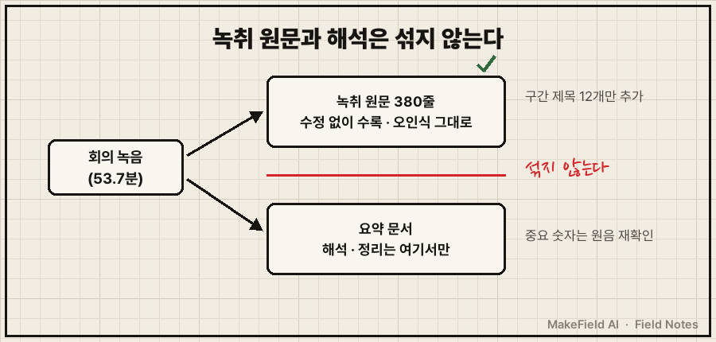

54분짜리 회의 녹음을 제 PC에서 받아 적으려고 faster-whisper를 돌렸는데, 모델이 뜨기도 전에 이 한 줄로 죽었어요.
TypeError: open() got an unexpected keyword argument 'metadata_errors'결론부터요. faster-whisper metadata_errors 오류는 모델 문제가 아니라, faster-whisper가 오디오를 읽을 때 쓰는 PyAV가 19.0.0부터 metadata_errors 인자를 없애서 나는 버전 충돌이에요. 파일 경로를 넘기지 말고 ffmpeg로 소리를 직접 풀어 배열로 넘기면 바로 돌아갑니다. 저는 이렇게 우회해서 3,221초짜리 녹음을 911초, 약 15분 만에 380줄로 받아 적었어요.
공장 제어 일을 15년째 하면서, 회의록이나 자료 정리는 AI랑 나눠서 하는 엔지니어예요. 녹음 파일은 되도록 밖으로 안 내보내고 PC 안에서 끝내는 편이라 로컬 전사를 자주 씁니다.
1. 어디서 터졌나: 트레이스백 세 줄만 보면 돼요
조건은 이랬어요.
- 녹음: m4a 한 개, 52MB, 53.7분
- 모델: large-v3-turbo (예전에 받아 둔 게 캐시에 있었음)
- 장치: GPU 없이 CPU 8스레드, int8
처음엔 흔한 예제대로 model.transcribe("녹음.m4a", ...) 처럼 파일 경로를 그대로 넘겼어요.
백그라운드로 걸어 두고 다른 일 하다 돌아오니 이렇게 죽어 있더라고요. (경로는 줄였어요)
File ".../faster_whisper/transcribe.py", line 876, in transcribe
audio = decode_audio(audio, sampling_rate=sampling_rate)
File ".../faster_whisper/audio.py", line 46, in decode_audio
with av.open(input_file, mode="r", metadata_errors="ignore") as container:
File "av/container/core.py", line 479, in av.container.core.open
TypeError: open() got an unexpected keyword argument 'metadata_errors'읽는 순서는 이래요.
faster-whisper가 파일을 받으면 decode_audio()로 소리를 풀고,
그 안에서 PyAV의 av.open()을 metadata_errors="ignore"를 붙여 부르는데,
PyAV 쪽에선 "그런 인자 모르는데요?" 하고 튕겨낸 거죠.

2. faster-whisper metadata_errors, 왜 생기나요?
PyAV 공식 변경 이력의 v19.0.0 항목에 이렇게 적혀 있어요.
"Remove the metadata_encoding and metadata_errors arguments to av.open"
메타데이터는 이제 항상 UTF-8로 읽는다고요.
그런데 제 PC의 faster-whisper 1.2.1 설치 정보를 열어 보면 PyAV 조건이 av>=11 하나뿐이에요.
위쪽 상한이 없으니, 새로 깔면 최신 PyAV 19가 같이 따라옵니다.
2026년 11월 19일에 다시 확인한 제 조합도 faster-whisper 1.2.1 + av 19.0.2였어요.
라이브러리는 옛 인자를 부르고, 부품은 그 인자를 이미 뺀 상태.. 서로 탓할 데도 없는 사고죠.
여러분 PC에서도 아래 한 줄이면 같은 조합인지 바로 보여요.
pip show faster-whisper av3. 해결: 디코딩을 밖으로 빼서 배열로 넘기기
AI가 고른 우회로는 단순했어요. PyAV를 아예 안 거치게 하는 거예요.
ffmpeg로 16kHz 모노 PCM을 뽑아서, numpy 배열로 바꿔 transcribe()에 넘깁니다.
faster-whisper 코드 설명(독스트링)에도 audio 인자는 파일 경로뿐 아니라 "the audio waveform", 즉 배열을 받는다고 돼 있어요.
raw = subprocess.run(["ffmpeg", "-v", "error", "-i", src,
"-f", "s16le", "-ac", "1", "-ar", "16000", "-"],
capture_output=True, check=True).stdout
audio = np.frombuffer(raw, np.int16).astype(np.float32) / 32768.0
segs, info = model.transcribe(audio, language="ko", vad_filter=True, beam_size=5,
condition_on_previous_text=False,
initial_prompt="(회의에 나올 고유명사 10개 남짓)")재밌는 건, faster-whisper audio.py 안에도 "그게 신경 쓰이면 ffmpeg를 직접 쓰라"는 주석이 원래 달려 있다는 거예요. 원래는 메모리 문제 때문에 남긴 말인데, 이번 오류의 탈출구도 거기였어요.
다시 돌린 결과는 이 한 줄이었어요.
done 911s, duration 3221sCPU만으로 녹음 길이의 약 3.5분의 1 시간이에요. 줄마다 [0:12:34]식 타임스탬프가 붙은 380줄이 나왔습니다.

4. 다른 방법도 있는데, 왜 이걸 골랐냐면요
| 방법 | 장점 | 걸리는 점 |
|---|---|---|
| PyAV를 19 아래로 내리기 | 코드 수정 0 | 같은 파이썬을 쓰는 다른 도구까지 버전이 묶임 (저는 안 해 봄) |
| faster-whisper 새 버전 기다리기 | 근본 해결 | 언제 나올지 모름, 회의록은 오늘 필요 |
| ffmpeg로 풀어서 배열 넘기기 | 버전 안 건드림, 몇 줄 수정 | ffmpeg가 PC에 깔려 있어야 함 |
저는 이미 ffmpeg를 쓰고 있어서 세 번째가 제일 가벼웠어요.
버전을 내리는 쪽도 변경 이력상 맞는 방법이긴 한데, 제 생각엔 한 PC에 자동화가 여러 개 도는 입장에선 패키지 하나 내리는 게 생각보다 겁나는 일이거든요.
5. 다 받아 적은 뒤엔, 틀린 글자를 일부러 안 고쳤어요
380줄을 열어 보니 고유명사랑 숫자가 꽤 틀려 있었어요.
화자 구분도 없고, 마이크에서 먼 사람 목소리는 군데군데 빠졌고요.
AI한테 "다듬어 줘" 하면 금방 매끈해지죠. 근데 그러면 실제로 들린 말과 AI가 추정한 말이 한 문서에 섞여요. 나중에 "그 숫자 진짜 저렇게 말했나?" 싶을 때 돌아갈 원본이 사라지는 거예요.
그래서 녹취록 맨 위에 "자동 음성인식 결과를 수정 없이 수록 — 고유명사·수치 오인식 다수"라고 적고,
- 본문 380줄은 틀린 그대로
- 구간 제목만 찾기 편하게 12개 추가
- 해석·정리는 별도 요약 문서로
이렇게 세 겹으로 나눴어요. 중요한 숫자는 원음을 다시 듣고 확인한다는 문구도 같이요.

자주 묻는 질문
Q. faster-whisper를 다시 깔면 해결되나요?
그냥 다시 깔면 최신 PyAV가 또 따라와서 같은 오류가 날 수 있어요. 설치 후 pip show av로 버전부터 보세요.
Q. CPU로 돌려도 쓸 만한가요?
제 경우 8스레드 int8, large-v3-turbo로 54분 녹음이 15분이었어요. 회의 끝나고 커피 한 잔 하는 사이에 끝나는 정도예요.
녹취록을 AI로 만드실 때, 원문이랑 정리본을 한 파일에 같이 두시나요, 따로 두시나요?
로컬 전사처럼 데이터를 밖에 안 내보내고 AI를 굴리는 방법들은 makefield.ai에 실습 위주로 정리해 두고 있어요.
출처
- PyAV CHANGELOG v19.0.0 ("Remove the metadata_encoding and metadata_errors arguments to av.open, and the matching attributes.") → https://github.com/PyAV-Org/PyAV/blob/main/CHANGELOG.rst (2026-11-19 확인)
- faster-whisper 1.2.1 패키지 메타데이터
Requires-Dist: av>=11,transcribe()독스트링 "Path to the input file (or a file-like object), or the audio waveform.",audio.py주석 → https://github.com/SYSTRAN/faster-whisper (설치본 2026-11-19 확인) - 실측: 개인 PC 로컬 전사 1회(2026-11-17), 녹음 3,221초·전사 911초·380줄 — 녹음 내용·파일명·경로 제외
태그: #fasterwhisper #metadata_errors #PyAV #음성전사 #로컬전사 #회의녹음 #녹취록 #whisper오류 #ffmpeg #파이썬오류 #TypeError #음성인식 #AI녹취록 #막힐때해결 #MakeFieldAI